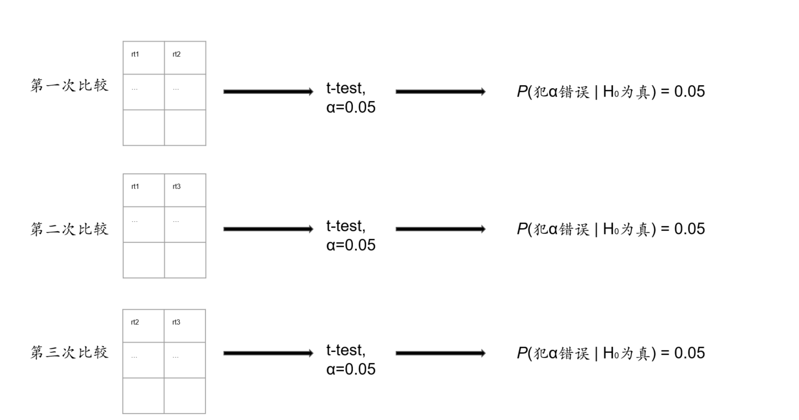
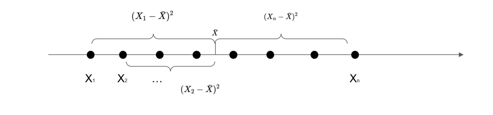
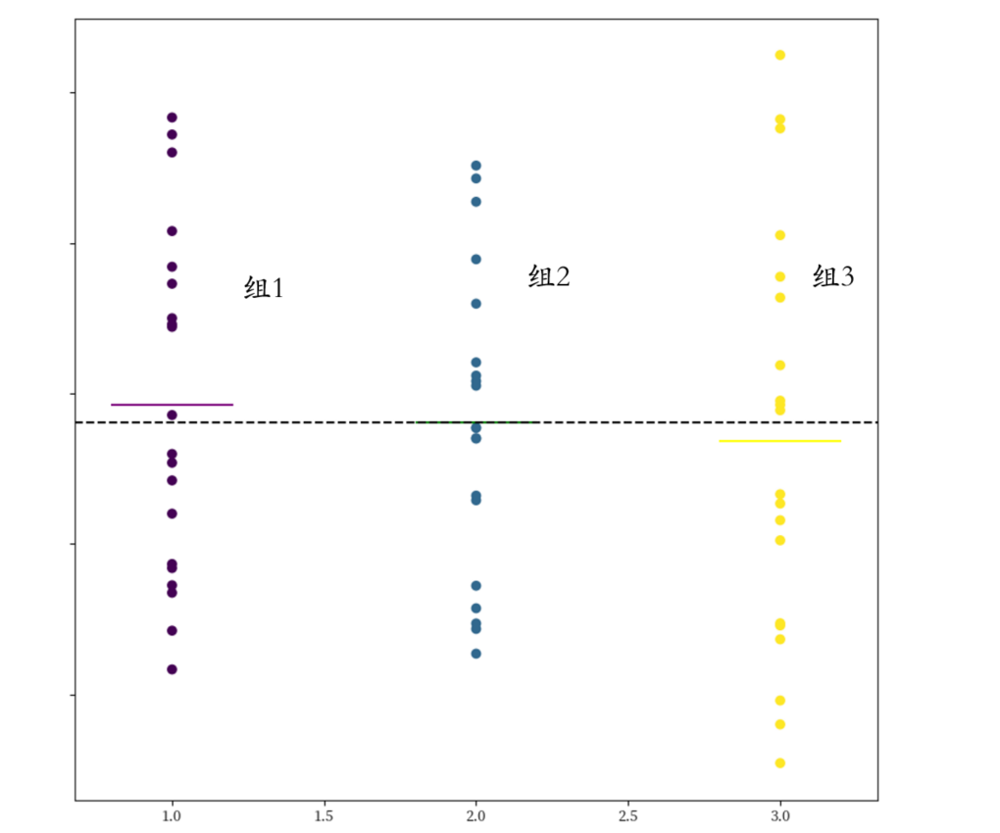
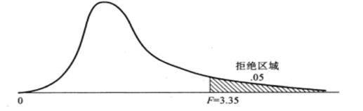
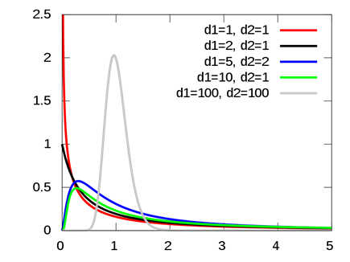

[1] "班级平均分为 86.28 班级分数标准差为 7.5"1 ANOVA (Ⅰ)
Hu Chuan-Peng
2023-09-05
本次课内容
- 上学期内容回顾
- 课程形式调整
- 本学期内容简介
- 从t-test到ANOVA
学期回顾


统计学在心理学中的应用

心理统计概论

概率
- 条件概率
\[p(A | B) = {p(A \cap B)}/{p(B)}\]
- 贝叶斯公式
\[p(A|B) = \frac{p(B|A)p(A)}{p(B)}\]
易错题1
假设从某大学的人群中进行随机抽样，这些人群中20%的人曾经参加过实验A，10%的人曾经参加过实验B，一共有5%的人同时参加过两个实验。现在随机从这些人中抽取一个参加过实验A的人，计算他曾经参加过实验B的概率是多少？

模型

不同的模型可以用来解释相同的现象
模型生成过程（Generative process）

模型逆向推理过程（Inverse inference process）

数据
| 称名 | 顺序 | 等距 | 等比 | |
|---|---|---|---|---|
| 不相等单位 | \(\surd\) | \(\surd\) | ||
| 相等单位 | \(\surd\) | \(\surd\) | ||
| 相对零点 | \(\surd\) | \(\surd\) | \(\surd\) | |
| 绝对零点 | \(\surd\) | |||
| 称名 | 顺序 | 等距 | 等比 | |
|---|---|---|---|---|
| 分类或标签变量 | \(\surd\) | \(\surd\) | \(\surd\) | \(\surd\) |
| 按顺序排列 | \(\surd\) | \(\surd\) | \(\surd\) | |
| 等距 | \(\surd\) | \(\surd\) | ||
| 有意义的零点 | \(\surd\) | |||
描述性统计
集中量数
集中量数是用来描述一组数据分布集中趋势的指标；
常见的集中量数有平均数、中位数、众数；
集中量数并不提供关于个体值的信息；
集中量数提供整个数据集的全面总结。
差异量数
- 数据绕平均值变化的程度
推断统计
参数估计

置信区间
.jpg)
中心极限定理

样本平均数抽样分布的条件和方法

假设检验基本步骤
提出假设。（确定假设分别是什么）；
根据虚无假设\(𝐻_0\)所提供的前提条件，选择合适的统计模型；
规定显著性水平α；
计算检验统计量的值；
做出决策。
p 值
p值衡量观察到的结果是否可归因于偶然。
不能给出期望的答案:假设是正确的概率是多少?
这些可能性取决于结果有多强，最重要的是，首先取决于假设的合理性。
两类错误
| \(H_0\)为真 | \(H_0\)为假 | |
|---|---|---|
| 不能拒绝\(H_0\) | √ | × |
| 拒绝\(H_0\) | × | √ |
两类错误
- H0为真
- 拒绝H0:\(\alpha\) = P(拒绝H0| H0为真)
- 不能拒绝H0:1-\(\alpha\) = P(不能拒绝H0| H0为真)
- H1为真
- 不能拒绝H0:\(\beta\) = P(不能拒绝H0| H1为真)
- 拒绝H0:1-\(\beta\) = P(拒绝H0| H1为真)
不同前提下两类错误的概率
\[\alpha=0.05,\beta=0.2\]
| H0为真(100%) | H1为真(0%) | |
|---|---|---|
| 拒绝H0 | 第一类错误/弃真错误(？%) | 正确(？%) |
| 不能拒绝H0 | 正确(？%) | 第二类错误/取伪错误(？%) |
| H0为真(100%) | H1为真(0%) | |
|---|---|---|
| 拒绝H0 | 第一类错误/弃真错误(5%) | 正确(0%) |
| 不能拒绝H0 | 正确(95%) | 第二类错误/取伪错误(0%) |
易错题2
| H0为真(25%) | H1为真(75%) | |
|---|---|---|
| 拒绝H0 | 假阳性(False Positive) | 真阳性(True Positive) |
| 不能拒绝H0 | 真阴性(True Negative) | 假阴性(False Negative) |
\(\alpha=0.05,1-\beta=0.8\)
| H0为真(25%) | H1为真(75%) | |
|---|---|---|
| 拒绝H0 | 0.25 * 0.05= 0.0125 | 0.75 * 0.8= 0.6 |
| 不能拒绝H0 | 0.25 * 0.95= 0.2375 | 0.75 * 0.2= 0.15 |
教学形式的变化
- 增加随机分组（持续一学期，小组成员角色随机）
- 小作业随机抽取小组进行报告
- 大作业的报告人在报告时进行随机抽取
教学计划
| 序号 | 春季学期内容 |
|---|---|
| 1 | 方差分析的基本原理 |
| 2 | 完全随机方差分析 |
| 3 | 随机区组和重复测量的方差分析 |
| 4 | 多因素方差分析 |
| 5 | 回归分析的基本原理 |
| 6 | 一元回归分析 |
| 7 | 多元回归分析 |
| 8 | 广义线性模型与逻辑回归 |
| 9 | 分层线性回归 |
| 10 | 线性模型作为一个统计框架 |
| 11 | 卡方检验&列联表分析 |
| 12 | AB test |
| 13 | 降维分析——以EFA和Cluster analysis为例 |
| 14 | 非参检验和permutation |
| 15 | bootstrap 与 simulation |
| 16 | 贝叶斯因子 |
注：课程安排会根据实际情况进行适当调整
从t-test到ANOVA
简单反应时是指人类对于某个特定刺激的判断和反应所需的时间，通常指的是从刺激出现到反应行为开始的时间间隔。这种反应时通常用于评估人类的注意力、反应能力和处理速度等认知能力。而物理刺激的属性会对简单反应时造成影响。其中，对比度是指图像中亮度变化的程度。较高的对比度表示图像中有较大的亮度差异，而较低的对比度表示图像中亮度差异较小。研究者想要研究对比度的变化是否会影响被试的简单反应时，他们搜集了30名被试在两种对比度条件下的简单反应时表现。
我们应该选用什么方法比较两种条件下是否存在差异？
如果我们想要比较三种对比度，分别是对比度高、中、低的情况，我们还可以使用该方法吗？
如果我们使用t检验分别对三组情况进行检验
One-Sample t-test
Hypothesis: two-sided (μ ≠ 0)
Descriptives:
────────────────────────
Variable N Mean (S.D.)
────────────────────────
rt1 30 0.42 (0.11)
rt2 30 0.53 (0.13)
────────────────────────
Results of t-test:
──────────────────────────────────────────────────────────────────────────────────
t df p Difference [95% CI] Cohen’s d [95% CI] BF10
──────────────────────────────────────────────────────────────────────────────────
rt1: (rt1 - 0) 20.78 29 <.001 *** 0.42 [0.38, 0.46] 3.79 [3.42, 4.17] 7.49e+15
rt2: (rt2 - 0) 22.50 29 <.001 *** 0.53 [0.48, 0.57] 4.11 [3.73, 4.48] 6.05e+16
──────────────────────────────────────────────────────────────────────────────────
One-Sample t-test
Hypothesis: two-sided (μ ≠ 0)
Descriptives:
────────────────────────
Variable N Mean (S.D.)
────────────────────────
rt1 30 0.42 (0.11)
rt3 30 0.57 (0.13)
────────────────────────
Results of t-test:
──────────────────────────────────────────────────────────────────────────────────
t df p Difference [95% CI] Cohen’s d [95% CI] BF10
──────────────────────────────────────────────────────────────────────────────────
rt1: (rt1 - 0) 20.78 29 <.001 *** 0.42 [0.38, 0.46] 3.79 [3.42, 4.17] 7.49e+15
rt3: (rt3 - 0) 23.47 29 <.001 *** 0.57 [0.52, 0.62] 4.29 [3.91, 4.66] 1.86e+17
──────────────────────────────────────────────────────────────────────────────────
One-Sample t-test
Hypothesis: two-sided (μ ≠ 0)
Descriptives:
────────────────────────
Variable N Mean (S.D.)
────────────────────────
rt2 30 0.53 (0.13)
rt3 30 0.57 (0.13)
────────────────────────
Results of t-test:
──────────────────────────────────────────────────────────────────────────────────
t df p Difference [95% CI] Cohen’s d [95% CI] BF10
──────────────────────────────────────────────────────────────────────────────────
rt2: (rt2 - 0) 22.50 29 <.001 *** 0.53 [0.48, 0.57] 4.11 [3.73, 4.48] 6.05e+16
rt3: (rt3 - 0) 23.47 29 <.001 *** 0.57 [0.52, 0.62] 4.29 [3.91, 4.66] 1.86e+17
──────────────────────────────────────────────────────────────────────────────────这样的做法存在什么问题（从p值的角度）？
两两比较之后犯错误的\(\alpha\)概率是多少呢？

\(p(犯错误的概率)=1-(1-0.05)^3 \approx 0.143\)


两两比较后，犯\(\alpha\)错误的概率大大增加，那么有什么方法能够降低犯错误的风险呢？
方差分析
当研究者想要比较两个或多个组之间的均值差异时，可使用方差分析（Analysis of Variance，简称ANOVA）。它是一种统计技术，可用来确定不同组间的均值是否显著不同。
方差
\[s^2 = \frac{\sum(X_i-\bar{X})^2}{df}\] \(s^2\): 方差、均方差，也可表示为MS
\[SS = \sum(X_i-\bar{X})^2\] SS: 离差平方和
\[\downarrow \]
\[s^2 = \frac{SS}{df}\]
\[SS = \sum(X_i-\bar{X})^2\]
方差的可分解性
方差（或变异）的可分解性是指总的离差平方和可以分解为几个不同来源的平方和。
方差蕴含的信息

方差的可分解性
方差（或变异）的可分解性是指总的离差平方和可以分解为几个不同来源的平方和。
总平方和可以分解为组内平方和和组间平方和。

\[ (X_i-\bar{X})^2 = (X_i-\bar{X_b})^2 + (\bar{X_b}-\bar{X})^2\] \[(\bar{X}总平均值，\bar{X_b}组平均值)\] \[\downarrow\] \[ \sum (X_i-\bar{X})^2 = \sum (X_i-\bar{X_b})^2 + \sum(\bar{X_b}-\bar{X})^2\] \[\downarrow\] \[SS_T = SS_W + SS_B\] \[(SS_T总平方和，SS_W组内平方和 ，SS_B组间平方和)\] 注：具体的公式推导可以参考课本
若想要对三个地区人群的主观幸福感进行比较，我们可以怎么样进行处理呢？
\(H_0\) : 三个地区人群的主观幸福感没有差异
\(H_1\) : 三个地区人群的主观幸福感存在差异
假定H0为真，则各组之间不存在差异,\(\bar{X_b} \rightarrow \bar{X}\)
\[ \sum(X_i - \bar{X_b})^2 = \sum(X_i - \bar{X})^2\] \[\sum(\bar{X_b}-\bar{X})^2 = 0\] \[\sum(X_i - \bar{X})^2 = \sum(X_i - \bar{X_b})^2 +\sum(\bar{X_b}-\bar{X})^2 = \sum(X_i - \bar{X_b})^2\]
\[SS_T = SS_W + SS_B\] \[SS_W = SS_T\]
\[SS_B = 0 \]


假定\(H_1\)为真，则各组之间存在差异
\[SS_B >> SS_W\] \[\downarrow\] \[\frac{MS_B}{MS_W}\] \[\downarrow\] \[+\infty\]
F值
\[F = \frac{MS_B}{MS_W}\]
当\(H_0\)为真时，F值服从一个广为人知的概率分布。为了纪念R.A.Fisher，这个分布称为F分布。
(F分布，自由度为(2,27))
F分布
前提条件：
- 总体正态
- 观测值来自正态分布的总体
- 变异的同质性
- $ ^2_1 =^2_2 =^2_3 $
- 独立性
F检验
总变异自由度：\(df_t = nk-1\)
每组组内自由度：n-1
总组内变异自由度：\(df_w = k(n-1)\)
组间变异自由度：\(df_b = k -1\)
\[F =\frac{MS_B}{MS_W} =\frac{\frac{SS_{b}}{df_{b}}}{\frac{SS_{w}}{df_{w}}}\]
t检验和F检验
\(t = \frac{\bar{X}-\mu}{\frac{\sigma_{X}}{\sqrt{n-1}}} = \frac{组1均值 - 组2均值}{标准差}\)
只有两组样本大小一致的数据的F检验
- $ F = = (魅族均值 - 总均值)^2/方差$
\(F = t^2\)
区别
| t检验 | F检验 |
|---|---|
| 两组数据比较 | 两组及以上数据的比较 |
| 样本所属总体服从正态或近似正态分布 | 样本来自一系列正态分布总体 |
| 两总体方差齐性(可利用F检验判断) | 数据样本方差齐性 |
| 变异可加 | |
| 统计值服从t分布 | 统计值服从F分布 |
总结
学期回顾
教学形式
教学计划
从t-test到ANOVA